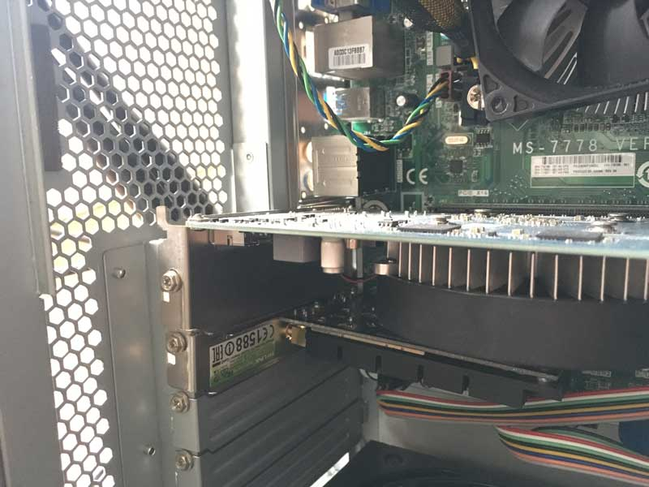

Projects
Use the Contents box in the sidebar to the left to jump to various projects.
Mostly small projects I've worked on for my own satisfaction.
The items that make it to this page usually lack documentation on the internet so I try to contribute where I can.
Sun Microsystems Ultra 45 Chassis modification for mounting standard ATX components
The Sun Ultra series is a discontinued line of workstation and server computers developed and sold by Sun Microsystems, comprising two distinct generations. The original line was introduced in 1995 and discontinued in 2001. This generation was partially replaced by the Sun Blade in 2000 and that line was in itself replaced by the Sun Java Workstation—an AMD Opteron system—in 2004. In sync with the transition to x86-64-architecture processors, in 2005 the Ultra brand was later revived with the launch of the Ultra 20 and Ultra 40, albeit to some confusion, since they were no longer based on UltraSPARC processors.
From Wikipedia: Sun_Ultra_series
In 2006 the final UltraSPARC based systems were introduced, named the Ultra 25 and Ultra 45. The following x86 Sun Ultra Workstations used AMD Opteron, Intel Core 2 Duo and Intel Xeon processors.
The main difference between the final UltraSPARC workstations was that the Ultra 45 could contain upto two UltraSPARC processors, also making the Ultra 45 a much larger chassis than the Ultra 25, depth-wise.

I bought the chassis empty off ebay for £30 total, all the other parts in addition cost me £90. The aim of this task was to make this piece of history usable again. I think we all would've preferred if this chassis came complete in all its SPARC glory, however buying something such as that is expensive in 2020.
Mounting a standard ATX motherboard
There are many methods of achieving this. I would consider it the stage that requires most thought. Depending how you do this will affect how any PCI accessories will mount if at all, and will determine how much space you have left over in the chassis.
Personally I found the simplest and most fail-proof way of mounting a motherboard would be to use an already fitting backplate from another standard ATX chassis and mount this to the Ultra 45 like an adapter. You can see the a demonstration of this in my video above. Others have tapped new standoffs directly into the Ultra 45. This is by far a more elegant solution and will require a little more effort. See how this can be on Trung Lê's YouTube video.
Note: The Sun Ultra 45 will fit an ATX motherboard, dimensions-wise. In my example I have used an mATX motherboard, so the mounting process will be different.
Mounting PCI expansion cards
Only a lightweight GPU is featured in my build, I could replace this with a heavier GPU since this PCIe accessory is fixed against the chassis' PCI expansion slots; it will hold stable.

Front IO and fitting 3.5 inch bay accessories
The front Io slot was once occupied by an optical drive and front io ports and buttons. The Chassis in the state that I bought it did not come with this panel. The slot will barely fit a 3.5 inch bay accessory such as a standard optical drive. There will however be minor gaps and it is a very tight fit. To allow an optical drive and most 3.5 inch bay accessories cutting and removing fairings from the inside of the bay is required since some plastics and metal sticks out in the way. This space is tight and will be difficult to modify. This space can be seen towards the end of the video above.
Fitting a standard ATX PSU
The Sun Ultra 45 will fit a standard ATX PSU upto great lengths. The issue is though that it will not be flush against the back of the chassis since the original PSU was shorter than the new standard ATX size. There will be a gap. This means that you will not be able to screw in the PSU without cutting some of the obstruent metal. Fixing the PSU in place to stop it from moving around will require improvisation.
There is a green thumb screw and slider on the bottom of the chassis. This is only for the original PSU and will not fit any other. They will not obstruct any standard PSU.
Mounting Fans
There are no mounting screw holes for any fans throughout the chassis. The original build has proprietary fan modules to control airflow. Mounting fans will require improvisation. There are enough grills and holes to figure something out.
I hope this information helps if you are attempting a similar project.
External GPU on a Thinkpad x230t using Expresscard
This particular setup
I will only mention some notes regarding this particular seteup I put together. If you are considering attempting an EGPU build of your own I reccomend reasearching the topic and finding similar already completed builds with success on the EGPU.io and Reddit EGPU forums. There are many factors you will have to consider when venturing with EGPUs as there is so much uncertainty throughout the entire process.
Parts List:
- Lenovo Thinkpad x230t
- EXP GDC BEAST V8 with Expresscard connector
- ATX PSU (430w)
- Nvidia GTX 660 2GB

Notes:
The Thinkpad x230 tablet happens to be quite a good candidate for expresscard EGPU solutions compared to many others in the same category. The Generation 3 Mobile CPU (not Ultrabook CPU) is a very good performer despite its age and power consumption. Compared to many other laptops with an Expresscard 34 or 54 slot, the Core i5-3320m is among the highest performers. This will reduce bottlenecking when using the laptop with an EGPU.
It is highly reccomended when using any of x/t_20/30 Thinkpads to only install 8gb of ram maximum. It is generally accepted that installing 16gb on these models, issues will undoubtedly arise.
Mostly the older the GPU, means the less issues you will have during setup and compatability. Pascal based Nvidia cards are to be avoided due to compatability but are workable. Most Nvidia cards can output to internal and external displays whilst AMD cards will only output an image to an external display. This is not much of an issue since using the internal display heavily bottlenecks the expresscard lanes making external diaplay use only viable.
A common error to occur during setup is the error code "42". This is related to drivers. Through many attempts of trial and error for my particular setup Nvida Drivers version 381.65 had the least issues. Other known versions that are known to bypass this error is version 375.63. For Nvidia 10 Series Pascal cards with this error, versions 372.20 and 372.70 are known to do the trick.
You cannot hot plug en expresscard connection, You must restart the machine on connect and disconnect.
EGPU setups such as this are workable on linux. I have yet to try it.